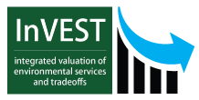

Step 5: Synthesize

Overview
Results from tools used in the previous step are often not in a usable format. Synthesizing decision-support tool outputs allows stakeholders to visualize and compare multiple ecosystem services in space and identify synergies (or bundles) and trade-offs. This step often involves substantial “post-processing” of model outputs. Examples of post-processing include converting outputs to local monetary units, normalizing outputs across services, and producing clear visualizations of spatial outputs that inform framing questions about coastal management and restoration.


Goals
- Synthesize outputs from the Analyze step to compare ecosystem service delivery under each scenario
- Summarize project information to be included in the communicate and apply phase (Communicate step)

Tips
- Maps, charts, table and other synthesis information should be clear and easy to understand
- Avoid jargon and including superfluous information that will confuse your audience
- Use metrics and visuals that have been determined to resonate with stakeholders and policy-/decision-makers
- Ask a colleague or friend (who is not familiar with your project) to review synthesis products and offer feedback
- Visit our Gallery to explore examples of design techniques NatCap and partners have used to translate science information into effective visuals

Helper Tools

Synthesizing spatial outputs from decision-support tools can be challenging. NatCap has created helper tools (or "off-ramps") to enable InVEST users to quickly explore results, perform basic post-processing, and assess outcomes without the need for a desktop GIS. The following are links to examples of InVEST helper tools:
- InVIEW is a web app that automates common synthesis and visualization tasks that may be necessary after running InVEST. InVIEW displays the results of your latest model run in a web browser. The tool allows InVEST users to easily explore and extract meaning from raw results without the need for a desktop GIS. With InVIEW, users can:
• View InVEST outputs on a fully interactive, Google Earth-style, map
• Explore spatial patterns (e.g., ecosystem service hotspots)
• Compare scenarios and highlight changes over time
• Quickly diagnose issues and refine InVEST model inputs
- InVEST 3.1.0 User's Guide - Every chapter includes a "Interpreting Results" section that defines intermediate and final outputs of each model
- Identifying Opportunities for Climate-Compatible Tourism Development in Belize
This online analytics tool enables users to summarize results from the InVEST coastal vulnerability model through a simple website. Model outputs have been linked to 2010 population census and tourism expenditure data and then visualized as maps and graphs.
- Marine InVEST Helper Tools - A GIS toolbox for pre- and post-processing data to be used with InVEST models (requires ArcGIS 10.x license)
- Visit our Experimental Software Tools discussion thread for synthesis helper tools that are currently under development

Frequently Asked Questions (FAQ)
Q: Is it possible to weigh options and compare tradeoffs if results are not in the same units?
A: Yes, it is possible. We make tradeoffs all the time where we know the cost of something and a physical measure of what we get for that cost. Try to synthesize results clearly in order to convey to your audience what is being gained or lost. Quantify it ecologically and economically (if possible) and spell out what can be gained through some management action. After presenting this information (Communicate step) let the stakeholders and decision-makers decide. Monetizing outputs for the sake of producing results in a common currency often results in less informed decisions.
Q: How are tradeoffs among ecosystem services synthesized?
A: Tradeoffs should be synthesized with the project objectives and audience in mind. When multiple services can be represented using a common unit (e.g., $, number of jobs, etc.), these values may be summarized across a scenario. In cases where results have different units (e.g., hectares of habitat, pounds of fish, number of visitors, etc.) something as simple as proportional arrows can be used to represent how services increase or decrease under alternative scenarios. See our Gallery for synthesis ideas.
Q: What is the best synthesis tool for MSP?
A: The best way to synthesize results is to use a method or process in which you are most comfortable. Members of NatCap have found it helpful to synthesize InVEST results using a combination of GIS (e.g., ArcGIS, QGIS, etc.) and graphic design software like Adobe Illustrator/ Photoshop, GIMP, or InkScape. However, industry favorites like Microsoft Excel and open-source packages like OpenOffice, R, or Python can also serve as effective synthesis tools. Bottom line: there are no rules or restrictions here - be creative!

Links

Use-Cases
Use the expand [+] button to learn more about this synthesize step in the context of select NatCap use-cases.top
Vancouver Island
NatCap is working with the West Coast Aquatic Management Board (WCA), a public-private partnership among government agencies and diverse local stakeholders, in its creation of spatial plans for Barkley and Clayoquot Sounds on the West Coast of Vancouver Island (WCVI). We iteratively mapped and analyzed ecosystem services across realistic zoning scenarios, which is helping decision makers accommodate varied priorities for using marine resources. Local zoning maps provided realistic scenarios for coastal populations. For larger-scale planning questions, West Coast Aquatic used outputs from InVEST and other tools to compare a wide range of value metrics across different management scenarios.
Belize
To inform the design of the Integrated Coastal Zone Management Plan for Belize we modeled three ecosystem services and produced biophysical and economic outputs for each service: 1) catch and revenue from spiny lobster, 2) land protected and avoided damages from storms, and 3) visitation and expenditures from tourism. We modeled the three services for the Current, Conservation, Informed Management and Development scenarios. We produced national results, for the entire region within the boundaries of the planning process (3 km inland and the territorial sea, (~18,000 km2)) and for each of the nine planning regions.